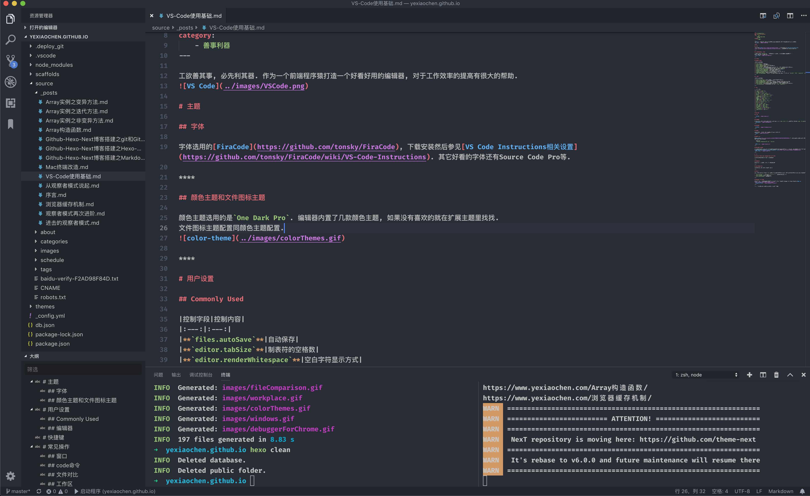
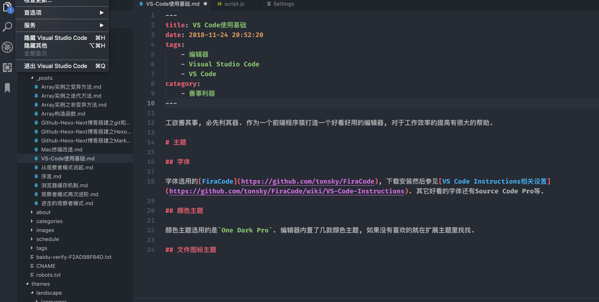
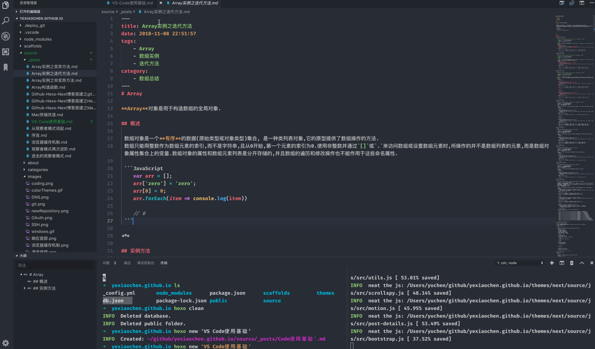
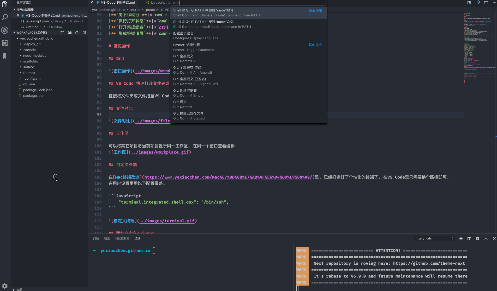
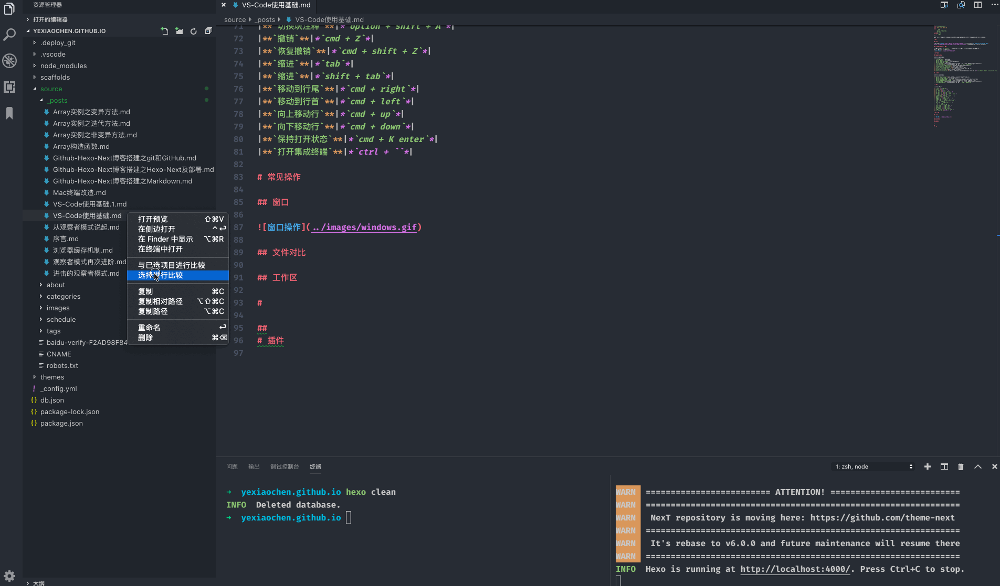
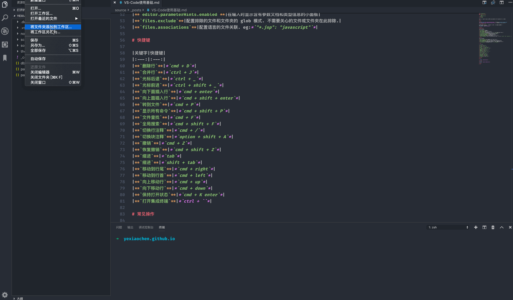
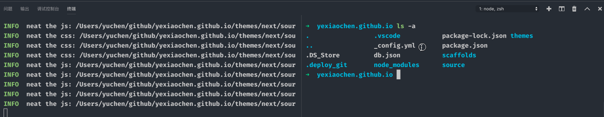
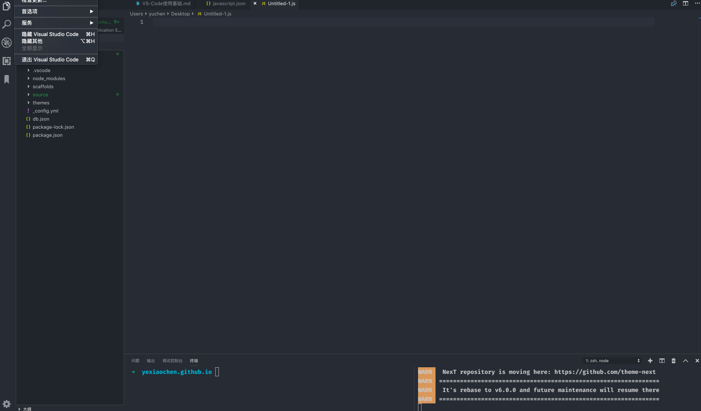

<!DOCTYPE html><html class="theme-next mist" lang="zh-Hans"><head><meta name="generator" content="Hexo 3.9.0"><meta charset="UTF-8"><meta name="baidu-site-verification" content="dil57BBbBc"><meta http-equiv="X-UA-Compatible" content="IE=edge"><meta name="viewport" content="width=device-width,initial-scale=1,maximum-scale=1"><meta name="theme-color" content="#222"><link rel="manifest" href="/manifest.json"><link rel="stylesheet" media="all" href="/lib/Han/dist/han.min.css?v=3.3"><meta http-equiv="Cache-Control" content="no-transform"><meta http-equiv="Cache-Control" content="no-siteapp"><meta name="google-site-verification" content="YH32omENY7b_BdEuIWv46jSBK-0Vyw_dWbJTGNBblT0"><link href="https://cdn.jsdelivr.net/gh/tonsky/FiraCode@1.206/distr/fira_code.css" rel="stylesheet" type="text/css"><link href="https://cdnjs.cloudflare.com/ajax/libs/font-awesome/4.7.0/css/font-awesome.min.css" rel="stylesheet" type="text/css"><link href="/css/main.css?v=5.1.4" rel="stylesheet" type="text/css"><link rel="apple-touch-icon" sizes="180x180" href="/images/favicon.ico?v=5.1.4"><link rel="icon" type="image/png" sizes="32x32" href="/images/favicon.ico?v=5.1.4"><link rel="icon" type="image/png" sizes="16x16" href="/images/favicon.ico?v=5.1.4"><link rel="icon" type="image/png" sizes="16x16" href="/images/favicon.ico?v=5.1.4"><link rel="icon" type="image/png" sizes="16x16" href="/images/favicon.ico?v=5.1.4"><link rel="icon" type="image/png" sizes="16x16" href="/images/favicon.ico?v=5.1.4"><meta name="keywords" content="编辑器,Visual Studio Code,VS Code,"><meta name="description" content="工欲善其事, 必先利其器. 作为一个前端程序猿打造一个好看好用的编辑器, 对于工作效率的提高有很大的帮助.主题字体字体选用的FiraCode, 下载安装然后参见VS Code Instructions相关设置. 其它好看的字体还有Source Code Pro等.颜色主题和文件图标主题颜色主题选用的是One Dark Pro. 编辑器内置了几款颜色主题, 如果没有喜欢的就在扩展主题里找找.文件图标"><meta name="keywords" content="编辑器,Visual Studio Code,VS Code"><meta property="og:type" content="article"><meta property="og:title" content="VS Code使用基础"><meta property="og:url" content="https://yexiaochen.github.io/VS-Code使用基础/index.html"><meta property="og:site_name" content="贪空"><meta property="og:description" content="工欲善其事, 必先利其器. 作为一个前端程序猿打造一个好看好用的编辑器, 对于工作效率的提高有很大的帮助.主题字体字体选用的FiraCode, 下载安装然后参见VS Code Instructions相关设置. 其它好看的字体还有Source Code Pro等.颜色主题和文件图标主题颜色主题选用的是One Dark Pro. 编辑器内置了几款颜色主题, 如果没有喜欢的就在扩展主题里找找.文件图标"><meta property="og:locale" content="zh-Hans"><meta property="og:image" content="https://yexiaochen.github.io/images/VSCode.png"><meta property="og:image" content="https://yexiaochen.github.io/images/colorThemes.gif"><meta property="og:image" content="https://yexiaochen.github.io/images/windows.gif"><meta property="og:image" content="https://yexiaochen.github.io/images/codeCommand.gif"><meta property="og:image" content="https://yexiaochen.github.io/images/fileComparison.gif"><meta property="og:image" content="https://yexiaochen.github.io/images/workplace.gif"><meta property="og:image" content="https://yexiaochen.github.io/images/terminal.gif"><meta property="og:image" content="https://yexiaochen.github.io/images/snippet.gif"><meta property="og:image" content="https://yexiaochen.github.io/images/debuggerForChrome.gif"><meta property="og:updated_time" content="2023-02-06T15:15:21.274Z"><meta name="twitter:card" content="summary"><meta name="twitter:title" content="VS Code使用基础"><meta name="twitter:description" content="工欲善其事, 必先利其器. 作为一个前端程序猿打造一个好看好用的编辑器, 对于工作效率的提高有很大的帮助.主题字体字体选用的FiraCode, 下载安装然后参见VS Code Instructions相关设置. 其它好看的字体还有Source Code Pro等.颜色主题和文件图标主题颜色主题选用的是One Dark Pro. 编辑器内置了几款颜色主题, 如果没有喜欢的就在扩展主题里找找.文件图标"><meta name="twitter:image" content="https://yexiaochen.github.io/images/VSCode.png"><script type="text/javascript" id="hexo.configurations">var NexT=window.NexT||{},CONFIG={root:"/",scheme:"Mist",version:"5.1.4",sidebar:{position:"left",display:"hide",offset:12,b2t:!1,scrollpercent:!1,onmobile:!0},fancybox:!1,tabs:!0,motion:{enable:!1,async:!1,transition:{post_block:"fadeIn",post_header:"slideDownIn",post_body:"slideDownIn",coll_header:"slideLeftIn",sidebar:"slideUpIn"}},duoshuo:{userId:"0",author:"博主"},algolia:{applicationID:"",apiKey:"",indexName:"",hits:{per_page:10},labels:{input_placeholder:"Search for Posts",hits_empty:"We didn't find any results for the search: ${query}",hits_stats:"${hits} results found in ${time} ms"}}}</script><link rel="canonical" href="https://yexiaochen.github.io/VS-Code使用基础/"><title>VS Code使用基础 | 贪空</title><script type="text/javascript">var _hmt=_hmt||[];!function(){var e=document.createElement("script");e.src="https://hm.baidu.com/hm.js?ad8db08f31eca01d048b60d4299de095";var t=document.getElementsByTagName("script")[0];t.parentNode.insertBefore(e,t)}()</script></head><body itemscope itemtype="http://schema.org/WebPage" lang="zh-Hans"><div class="container sidebar-position-left page-post-detail"><div class="headband"></div><header id="header" class="header" itemscope itemtype="http://schema.org/WPHeader"><div class="header-inner"><div class="site-brand-wrapper"><div class="site-meta"><div class="custom-logo-site-title"><a href="/" class="brand" rel="start"><span class="logo-line-before"><i></i></span> <span class="site-title">贪空</span> <span class="logo-line-after"><i></i></span></a></div><h1 class="site-subtitle" itemprop="description">贪空 Blog</h1></div><div class="site-nav-toggle"><button><span class="btn-bar"></span> <span class="btn-bar"></span> <span class="btn-bar"></span></button></div></div><nav class="site-nav"><ul id="menu" class="menu"><li class="menu-item menu-item-home"><a href="/" rel="section"><i class="menu-item-icon fa fa-fw fa-home"></i><br>首页</a></li><li class="menu-item menu-item-tags"><a href="/tags/" rel="section"><i class="menu-item-icon fa fa-fw fa-tags"></i><br>标签</a></li><li class="menu-item menu-item-categories"><a href="/categories/" rel="section"><i class="menu-item-icon fa fa-fw fa-th"></i><br>分类</a></li><li class="menu-item menu-item-archives"><a href="/archives/" rel="section"><i class="menu-item-icon fa fa-fw fa-archive"></i><br>归档</a></li></ul></nav></div></header><main id="main" class="main"><div class="main-inner"><div class="content-wrap"><div id="content" class="content"><div id="posts" class="posts-expand"><article class="post post-type-normal" itemscope itemtype="http://schema.org/Article"><div class="post-block"><link itemprop="mainEntityOfPage" href="https://yexiaochen.github.io/VS-Code使用基础/"><span hidden itemprop="author" itemscope itemtype="http://schema.org/Person"><meta itemprop="name" content="贪空"><meta itemprop="description" content><meta itemprop="image" content="/images/avatar.jpeg"></span><span hidden itemprop="publisher" itemscope itemtype="http://schema.org/Organization"><meta itemprop="name" content="贪空"></span><header class="post-header"><h2 class="post-title" itemprop="name headline">VS Code使用基础</h2><div class="post-meta"><span class="post-time"><span class="post-meta-item-icon"><i class="fa fa-calendar-o"></i> </span><span class="post-meta-item-text">发表于</span> <time title="创建于" itemprop="dateCreated datePublished" datetime="2018-11-24T20:52:20+08:00">2018-11-24 </time><span class="post-meta-divider">|</span> <span class="post-meta-item-icon"><i class="fa fa-calendar-check-o"></i> </span><span class="post-meta-item-text">更新于&#58;</span> <time title="更新于" itemprop="dateModified" datetime="2023-02-06T23:15:21+08:00">2023-02-06 </time></span><span class="post-category"><span class="post-meta-divider">|</span> <span class="post-meta-item-icon"><i class="fa fa-folder-o"></i> </span><span class="post-meta-item-text">分类于</span> <span itemprop="about" itemscope itemtype="http://schema.org/Thing"><a href="/categories/善事利器/" itemprop="url" rel="index"><span itemprop="name">善事利器</span></a></span></span><div class="post-wordcount"><span class="post-meta-item-icon"><i class="fa fa-file-word-o"></i> </span><span class="post-meta-item-text">字数统计&#58;</span> <span title="字数统计">1,110 字 </span><span class="post-meta-divider">|</span> <span class="post-meta-item-icon"><i class="fa fa-clock-o"></i> </span><span class="post-meta-item-text">阅读时长 &asymp;</span> <span title="阅读时长">4 分钟</span></div></div></header><div class="post-body han-init-context" itemprop="articleBody"><p>工欲善其事, 必先利其器. 作为一个前端程序猿打造一个好看好用的编辑器, 对于工作效率的提高有很大的帮助.<br></p><h1 id="主题"><a href="#主题" class="headerlink" title="主题"></a>主题</h1><h2 id="字体"><a href="#字体" class="headerlink" title="字体"></a>字体</h2><p>字体选用的<a href="https://github.com/tonsky/FiraCode" rel="external nofollow noopener noreferrer" target="_blank">FiraCode</a>, 下载安装然后参见<a href="https://github.com/tonsky/FiraCode/wiki/VS-Code-Instructions" rel="external nofollow noopener noreferrer" target="_blank">VS Code Instructions相关设置</a>. 其它好看的字体还有Source Code Pro等.</p><hr><h2 id="颜色主题和文件图标主题"><a href="#颜色主题和文件图标主题" class="headerlink" title="颜色主题和文件图标主题"></a>颜色主题和文件图标主题</h2><p>颜色主题选用的是<code>One Dark Pro</code>. 编辑器内置了几款颜色主题, 如果没有喜欢的就在扩展主题里找找.<br>文件图标主题配置同颜色主题配置.<br></p><hr><h1 id="用户设置"><a href="#用户设置" class="headerlink" title="用户设置"></a>用户设置</h1><h2 id="Commonly-Used"><a href="#Commonly-Used" class="headerlink" title="Commonly Used"></a>Commonly Used</h2><table><thead><tr><th style="text-align:center">控制字段</th><th style="text-align:center">控制内容</th></tr></thead><tbody><tr><td style="text-align:center"><strong><code>files.autoSave</code></strong></td><td style="text-align:center">自动保存</td></tr><tr><td style="text-align:center"><strong><code>editor.tabSize</code></strong></td><td style="text-align:center">制表符的空格数</td></tr><tr><td style="text-align:center"><strong><code>editor.renderWhitespace</code></strong></td><td style="text-align:center">空白字符显示方式</td></tr><tr><td style="text-align:center"><strong><code>editor.wordWrap</code></strong></td><td style="text-align:center">换行方式</td></tr><tr><td style="text-align:center"><strong><code>files.exclude</code></strong></td><td style="text-align:center">配置排除的文件和文件夹的 glob 模式. 不需要关心的文件或文件夹在此排除.</td></tr><tr><td style="text-align:center"><strong><code>files.associations</code></strong></td><td style="text-align:center">配置语言的文件关联. eg:<em><code>&quot;**.jsp&quot;: &quot;javascript&quot;</code></em></td></tr><tr><td style="text-align:center"><strong><code>files.trimTrailingWhitespace</code></strong></td><td style="text-align:center">启用后，将在保存文件时剪裁尾随空格</td></tr><tr><td style="text-align:center"><strong><code>workbench.editor.labelFormat</code></strong></td><td style="text-align:center">控制编辑器标签的格式</td></tr><tr><td style="text-align:center"><strong><code>window.openFilesInNewWindow</code></strong></td><td style="text-align:center">控制是否在新窗口中打开文件</td></tr><tr><td style="text-align:center"><strong><code>terminal.integrated.shell.osx</code></strong></td><td style="text-align:center">终端在 macOS 上使用的 Shell 的路径</td></tr><tr><td style="text-align:center"><strong><code>breadcrumbs.enabled</code></strong></td><td style="text-align:center">启用/禁用导航路径(面包屑)</td></tr><tr><td style="text-align:center"><strong><code>emmet.includeLanguages</code></strong></td><td style="text-align:center">在默认不支持 Emmet 的语言中启用 Emmet 缩写功能. eg:<em><code>&quot;vue-html&quot;: &quot;html&quot;, &quot;javascript&quot;: &quot;javascriptreact&quot;</code></em></td></tr></tbody></table><hr><h2 id="编辑器"><a href="#编辑器" class="headerlink" title="编辑器"></a>编辑器</h2><table><thead><tr><th style="text-align:center">控制字段</th><th style="text-align:center">控制内容</th></tr></thead><tbody><tr><td style="text-align:center"><strong><code>editor.formatOnType</code></strong></td><td style="text-align:center">控制编辑器在键入一行后是否自动格式化该行</td></tr><tr><td style="text-align:center"><strong><code>editor.minimap.enabled</code></strong></td><td style="text-align:center">是否显示小地图</td></tr><tr><td style="text-align:center"><strong><code>editor.mouseWheelZoom</code></strong></td><td style="text-align:center">按住 <code>Ctrl</code> 键并滚动鼠标滚轮时对编辑器字体大小进行缩放</td></tr><tr><td style="text-align:center"><strong><code>editor.parameterHints.enabled</code></strong></td><td style="text-align:center">在输入时显示含有参数文档和类型信息的小面板</td></tr><tr><td style="text-align:center"><strong><code>files.exclude</code></strong></td><td style="text-align:center">配置排除的文件和文件夹的 glob 模式. 不需要关心的文件或文件夹在此排除.</td></tr><tr><td style="text-align:center"><strong><code>files.associations</code></strong></td><td style="text-align:center">配置语言的文件关联. eg:<em>`”</em>.jsp”: “javascript”`*</td></tr></tbody></table><hr><h1 id="快捷键"><a href="#快捷键" class="headerlink" title="快捷键"></a>快捷键</h1><table><thead><tr><th style="text-align:center">关键字</th><th style="text-align:center">快捷键</th></tr></thead><tbody><tr><td style="text-align:center"><strong><code>删除行</code></strong></td><td style="text-align:center"><em><code>cmd + D</code></em></td></tr><tr><td style="text-align:center"><strong><code>合并行</code></strong></td><td style="text-align:center"><em><code>ctrl + J</code></em></td></tr><tr><td style="text-align:center"><strong><code>光标后退</code></strong></td><td style="text-align:center"><em><code>ctrl + _</code></em></td></tr><tr><td style="text-align:center"><strong><code>光标前进</code></strong></td><td style="text-align:center"><em><code>ctrl + shift + _</code></em></td></tr><tr><td style="text-align:center"><strong><code>向下面插入行</code></strong></td><td style="text-align:center"><em><code>cmd + enter</code></em></td></tr><tr><td style="text-align:center"><strong><code>向上面插入行</code></strong></td><td style="text-align:center"><em><code>cmd + shift + enter</code></em></td></tr><tr><td style="text-align:center"><strong><code>转到文件</code></strong></td><td style="text-align:center"><em><code>cmd + P</code></em></td></tr><tr><td style="text-align:center"><strong><code>显示所有命令</code></strong></td><td style="text-align:center"><em><code>cmd + shift + P</code></em></td></tr><tr><td style="text-align:center"><strong><code>文件查找</code></strong></td><td style="text-align:center"><em><code>cmd + F</code></em></td></tr><tr><td style="text-align:center"><strong><code>全局搜索</code></strong></td><td style="text-align:center"><em><code>cmd + shift + F</code></em></td></tr><tr><td style="text-align:center"><strong><code>切换行注释</code></strong></td><td style="text-align:center"><em><code>cmd + /</code></em></td></tr><tr><td style="text-align:center"><strong><code>切换块注释</code></strong></td><td style="text-align:center"><em><code>shift + alt + A</code></em></td></tr><tr><td style="text-align:center"><strong><code>撤销</code></strong></td><td style="text-align:center"><em><code>cmd + Z</code></em></td></tr><tr><td style="text-align:center"><strong><code>恢复撤销</code></strong></td><td style="text-align:center"><em><code>cmd + shift + Z</code></em></td></tr><tr><td style="text-align:center"><strong><code>缩进</code></strong></td><td style="text-align:center"><em><code>tab</code></em></td></tr><tr><td style="text-align:center"><strong><code>缩进</code></strong></td><td style="text-align:center"><em><code>shift + tab</code></em></td></tr><tr><td style="text-align:center"><strong><code>移动到行尾</code></strong></td><td style="text-align:center"><em><code>cmd + right</code></em></td></tr><tr><td style="text-align:center"><strong><code>移动到行首</code></strong></td><td style="text-align:center"><em><code>cmd + left</code></em></td></tr><tr><td style="text-align:center"><strong><code>向上移动行</code></strong></td><td style="text-align:center"><em><code>cmd + up</code></em></td></tr><tr><td style="text-align:center"><strong><code>向下移动行</code></strong></td><td style="text-align:center"><em><code>cmd + down</code></em></td></tr><tr><td style="text-align:center"><strong><code>保持打开状态(workbench.action.keepEditor)</code></strong></td><td style="text-align:center"><em><code>cmd + K enter</code></em></td></tr><tr><td style="text-align:center"><strong><code>打开集成终端</code></strong></td><td style="text-align:center"><em><code>ctrl + `</code></em></td></tr><tr><td style="text-align:center"><strong><code>集成终端清屏</code></strong></td><td style="text-align:center"><em><code>cmd + K</code></em></td></tr><tr><td style="text-align:center"><strong><code>格式化文件</code></strong></td><td style="text-align:center"><em><code>shift + alt + F</code></em></td></tr></tbody></table><hr><h1 id="常见操作"><a href="#常见操作" class="headerlink" title="常见操作"></a>常见操作</h1><h2 id="窗口"><a href="#窗口" class="headerlink" title="窗口"></a>窗口</h2><p></p><hr><h2 id="code命令"><a href="#code命令" class="headerlink" title="code命令"></a>code命令</h2><p>VS Code快速打开文件夹或文件,可以将其直接拖至VS Code图标上. 或<code>cmd + shift + P</code>打开命令面板, 向Path添加<code>code</code>, 用<code>code</code>命令操作.<br></p><hr><h2 id="文件对比"><a href="#文件对比" class="headerlink" title="文件对比"></a>文件对比</h2><p></p><hr><h2 id="工作区"><a href="#工作区" class="headerlink" title="工作区"></a>工作区</h2><p>可以将其它项目与当前项目置于同一工作区, 在同一个窗口查看编辑.<br></p><hr><h2 id="自定义终端"><a href="#自定义终端" class="headerlink" title="自定义终端"></a>自定义终端</h2><p>在<a href="https://yexiaochen.github.io/Mac%E7%BB%88%E7%AB%AF%E6%94%B9%E9%80%A0/">Mac终端改造</a>里, 已经打造好了个性化的终端了. 在VS Code里只需要换个路径即可.<br>在用户设置里用以下配置覆盖.</p><figure class="highlight javascript"><table><tr><td class="gutter"><pre><span class="line">1</span><br></pre></td><td class="code"><pre><span class="line"><span class="string">"terminal.integrated.shell.osx"</span>: <span class="string">"/bin/zsh"</span>,</span><br></pre></td></tr></table></figure><p></p><hr><h2 id="添加自定义snippet"><a href="#添加自定义snippet" class="headerlink" title="添加自定义snippet"></a>添加自定义snippet</h2><p>VS Code内置了自定义snippet功能, 用户可以根据自己的需求去添加自己想要的代码段, 灵活且方便, 这样就完全没有必要去安装类似的插件了. 细节可参考<a href="https://juejin.im/entry/5aebc727f265da0b9526f54e" rel="external nofollow noopener noreferrer" target="_blank">[VS Code]跟我一起在Visual Studio Code 添加自定义snippet（代码段），附详细配置</a>.<br></p><hr><h1 id="插件"><a href="#插件" class="headerlink" title="插件"></a>插件</h1><h2 id="Chinese-Simplified-Language-Pack-for-VS-Code"><a href="#Chinese-Simplified-Language-Pack-for-VS-Code" class="headerlink" title="Chinese (Simplified) Language Pack for VS Code"></a>Chinese (Simplified) Language Pack for VS Code</h2><p>此中文（简体）语言包为 VS Code 提供本地化界面.</p><hr><h2 id="Bookmarks"><a href="#Bookmarks" class="headerlink" title="Bookmarks"></a>Bookmarks</h2><p>在代码中做标记, 可以在不同的标记中快速便捷的切换.</p><hr><h2 id="Auto-Rename-Tag"><a href="#Auto-Rename-Tag" class="headerlink" title="Auto Rename Tag"></a>Auto Rename Tag</h2><p>修改HTML/XML标签时, 首尾标签会自动同步更改.</p><hr><h2 id="ESLint"><a href="#ESLint" class="headerlink" title="ESLint"></a>ESLint</h2><p>一个开源的 JavaScript 代码检查插件, 可以在编写或保存文件时对文件进行检测. 根据规则配置文件对文件进行检测提示, 并可以自动修复部分不符合规则的部分.</p><ul><li><code>&quot;eslint.options&quot;: { &quot;configFile&quot;: &quot;**/**/**&quot; }</code> : 本地的配置文件地址路径.</li><li><code>eslint.validate</code>: 可被识别的文件类型.</li><li><code>eslint.autoFixOnSave</code>: 保存时自动修复.</li></ul><hr><h2 id="Debugger-for-Chrome"><a href="#Debugger-for-Chrome" class="headerlink" title="Debugger for Chrome"></a>Debugger for Chrome</h2><p>在代码里断点, 就是相对地知道文件在哪里吧, Chrome里打断点还是挺好用地. Debugger for Chrome 配置可参见<a href="https://github.com/Microsoft/vscode-recipes" rel="external nofollow noopener noreferrer" target="_blank">官网例子</a>.<br></p><hr><p>插件什么的真的不见得能提高多少效率, 讲真, 颜值才是正义, 颜值才是王道🤔.</p></div><div><div><div style="text-align:center;color:#555;font-size:18px">------------- The End -------------</div></div></div><div><ul class="post-copyright"><li class="post-copyright-author"><strong>本文作者：</strong> 贪空</li><li class="post-copyright-link"><strong>本文链接：</strong> <a href="https://yexiaochen.github.io/VS-Code使用基础/" title="VS Code使用基础">https://yexiaochen.github.io/VS-Code使用基础/</a></li><li class="post-copyright-license"><strong>版权声明： </strong>本博客所有文章除特别声明外，均采用 <a href="https://creativecommons.org/licenses/by-nc-sa/3.0/" rel="external nofollow noopener noreferrer" target="_blank">CC BY-NC-SA 3.0</a> 许可协议。转载请注明出处！</li></ul></div><footer class="post-footer"><div class="post-tags"><a href="/tags/编辑器/" rel="tag"><i class="fa fa-tag"></i> 编辑器</a> <a href="/tags/Visual-Studio-Code/" rel="tag"><i class="fa fa-tag"></i> Visual Studio Code</a> <a href="/tags/VS-Code/" rel="tag"><i class="fa fa-tag"></i> VS Code</a></div><div class="post-nav"><div class="post-nav-next post-nav-item"><a href="/观察者模式再次进阶/" rel="next" title="观察者模式再次进阶"><i class="fa fa-chevron-left"></i> 观察者模式再次进阶</a></div><span class="post-nav-divider"></span><div class="post-nav-prev post-nav-item"><a href="/String原型方法/" rel="prev" title="String原型方法">String原型方法 <i class="fa fa-chevron-right"></i></a></div></div></footer></div></article><div class="post-spread"></div></div></div><div class="comments" id="comments"><div onclick="showGitment()" id="gitment-display-button">显示评论</div><div id="gitment-container" style="display:none"></div></div></div><div class="sidebar-toggle"><div class="sidebar-toggle-line-wrap"><span class="sidebar-toggle-line sidebar-toggle-line-first"></span> <span class="sidebar-toggle-line sidebar-toggle-line-middle"></span> <span class="sidebar-toggle-line sidebar-toggle-line-last"></span></div></div><aside id="sidebar" class="sidebar"><div id="sidebar-dimmer"></div><div class="sidebar-inner"><ul class="sidebar-nav motion-element"><li class="sidebar-nav-toc sidebar-nav-active" data-target="post-toc-wrap">文章目录</li><li class="sidebar-nav-overview" data-target="site-overview-wrap">站点概览</li></ul><section class="site-overview-wrap sidebar-panel"><div class="site-overview"><div class="site-author motion-element" itemprop="author" itemscope itemtype="http://schema.org/Person"><p class="site-author-name" itemprop="name">贪空</p><p class="site-description motion-element" itemprop="description"></p></div><nav class="site-state motion-element"><div class="site-state-item site-state-posts"><a href="/archives/"><span class="site-state-item-count">68</span> <span class="site-state-item-name">日志</span></a></div><div class="site-state-item site-state-categories"><a href="/categories/index.html"><span class="site-state-item-count">11</span> <span class="site-state-item-name">分类</span></a></div><div class="site-state-item site-state-tags"><a href="/tags/index.html"><span class="site-state-item-count">118</span> <span class="site-state-item-name">标签</span></a></div></nav><div class="links-of-author motion-element"><span class="links-of-author-item"><a href="mailto:2277438436@qq.com" target="_blank" title="E-Mail" rel="external nofollow noopener noreferrer"><i class="fa fa-fw fa-envelope"></i>E-Mail</a></span></div></div></section><section class="post-toc-wrap motion-element sidebar-panel sidebar-panel-active"><div class="post-toc"><div class="post-toc-content"><ol class="nav"><li class="nav-item nav-level-1"><a class="nav-link" href="#主题"><span class="nav-number">1.</span> <span class="nav-text">主题</span></a><ol class="nav-child"><li class="nav-item nav-level-2"><a class="nav-link" href="#字体"><span class="nav-number">1.1.</span> <span class="nav-text">字体</span></a></li><li class="nav-item nav-level-2"><a class="nav-link" href="#颜色主题和文件图标主题"><span class="nav-number">1.2.</span> <span class="nav-text">颜色主题和文件图标主题</span></a></li></ol></li><li class="nav-item nav-level-1"><a class="nav-link" href="#用户设置"><span class="nav-number">2.</span> <span class="nav-text">用户设置</span></a><ol class="nav-child"><li class="nav-item nav-level-2"><a class="nav-link" href="#Commonly-Used"><span class="nav-number">2.1.</span> <span class="nav-text">Commonly Used</span></a></li><li class="nav-item nav-level-2"><a class="nav-link" href="#编辑器"><span class="nav-number">2.2.</span> <span class="nav-text">编辑器</span></a></li></ol></li><li class="nav-item nav-level-1"><a class="nav-link" href="#快捷键"><span class="nav-number">3.</span> <span class="nav-text">快捷键</span></a></li><li class="nav-item nav-level-1"><a class="nav-link" href="#常见操作"><span class="nav-number">4.</span> <span class="nav-text">常见操作</span></a><ol class="nav-child"><li class="nav-item nav-level-2"><a class="nav-link" href="#窗口"><span class="nav-number">4.1.</span> <span class="nav-text">窗口</span></a></li><li class="nav-item nav-level-2"><a class="nav-link" href="#code命令"><span class="nav-number">4.2.</span> <span class="nav-text">code命令</span></a></li><li class="nav-item nav-level-2"><a class="nav-link" href="#文件对比"><span class="nav-number">4.3.</span> <span class="nav-text">文件对比</span></a></li><li class="nav-item nav-level-2"><a class="nav-link" href="#工作区"><span class="nav-number">4.4.</span> <span class="nav-text">工作区</span></a></li><li class="nav-item nav-level-2"><a class="nav-link" href="#自定义终端"><span class="nav-number">4.5.</span> <span class="nav-text">自定义终端</span></a></li><li class="nav-item nav-level-2"><a class="nav-link" href="#添加自定义snippet"><span class="nav-number">4.6.</span> <span class="nav-text">添加自定义snippet</span></a></li></ol></li><li class="nav-item nav-level-1"><a class="nav-link" href="#插件"><span class="nav-number">5.</span> <span class="nav-text">插件</span></a><ol class="nav-child"><li class="nav-item nav-level-2"><a class="nav-link" href="#Chinese-Simplified-Language-Pack-for-VS-Code"><span class="nav-number">5.1.</span> <span class="nav-text">Chinese (Simplified) Language Pack for VS Code</span></a></li><li class="nav-item nav-level-2"><a class="nav-link" href="#Bookmarks"><span class="nav-number">5.2.</span> <span class="nav-text">Bookmarks</span></a></li><li class="nav-item nav-level-2"><a class="nav-link" href="#Auto-Rename-Tag"><span class="nav-number">5.3.</span> <span class="nav-text">Auto Rename Tag</span></a></li><li class="nav-item nav-level-2"><a class="nav-link" href="#ESLint"><span class="nav-number">5.4.</span> <span class="nav-text">ESLint</span></a></li><li class="nav-item nav-level-2"><a class="nav-link" href="#Debugger-for-Chrome"><span class="nav-number">5.5.</span> <span class="nav-text">Debugger for Chrome</span></a></li></ol></li></ol></div></div></section></div></aside></div></main><footer id="footer" class="footer"><div class="footer-inner"><div class="copyright">&copy; 2018 &mdash; <span itemprop="copyrightYear">2023</span> <span class="with-love"><i class="fa fa-user"></i> </span><span class="author" itemprop="copyrightHolder">贪空</span></div></div></footer><div class="back-to-top"><i class="fa fa-arrow-up"></i></div></div><script type="text/javascript">"[object Function]"!==Object.prototype.toString.call(window.Promise)&&(window.Promise=null)</script><script type="text/javascript" src="https://cdnjs.cloudflare.com/ajax/libs/jquery/3.3.1/jquery.min.js"></script><script type="text/javascript" src="https://cdnjs.cloudflare.com/ajax/libs/fastclick/1.0.6/fastclick.min.js"></script><script type="text/javascript" src="https://cdnjs.cloudflare.com/ajax/libs/jquery_lazyload/1.9.7/jquery.lazyload.min.js"></script><script type="text/javascript" src="https://cdnjs.cloudflare.com/ajax/libs/velocity/1.2.1/velocity.min.js"></script><script type="text/javascript" src="https://cdnjs.cloudflare.com/ajax/libs/velocity/1.2.1/velocity.ui.min.js"></script><script type="text/javascript" src="/js/src/utils.js?v=5.1.4"></script><script type="text/javascript" src="/js/src/motion.js?v=5.1.4"></script><script type="text/javascript" src="/js/src/scrollspy.js?v=5.1.4"></script><script type="text/javascript" src="/js/src/post-details.js?v=5.1.4"></script><script type="text/javascript" src="/js/src/bootstrap.js?v=5.1.4"></script><link rel="stylesheet" href="https://cdn.jsdelivr.net/npm/gitalk@1/dist/gitalk.css"><script src="https://cdn.jsdelivr.net/npm/gitalk@1/dist/gitalk.min.js"></script><style>a.gitment-editor-footer-tip{display:none}.gitment-container.gitment-footer-container{display:none}</style><script type="text/javascript">function renderGitment(){new Gitalk({id:window.decodeURIComponent(window.location.pathname),owner:"yexiaochen",repo:"blogComments",distractionFreeMode:!1,admin:["yexiaochen"],clientSecret:"5df7f4f6edb8a65fef2d0cf7cb6fa40b04a44525",clientID:"fad749b2b67be41f767a"}).render("gitment-container")}function showGitment(){document.getElementById("gitment-display-button").style.display="none",document.getElementById("gitment-container").style.display="block",renderGitment()}</script><script>!function(){var t=document.createElement("script"),e=window.location.protocol.split(":")[0];t.src="https"===e?"https://zz.bdstatic.com/linksubmit/push.js":"http://push.zhanzhang.baidu.com/push.js";var s=document.getElementsByTagName("script")[0];s.parentNode.insertBefore(t,s)}()</script></body></html>